予定したラインを
外れたら知らせる
現在地と予定ルートを常に確認してお知らせ
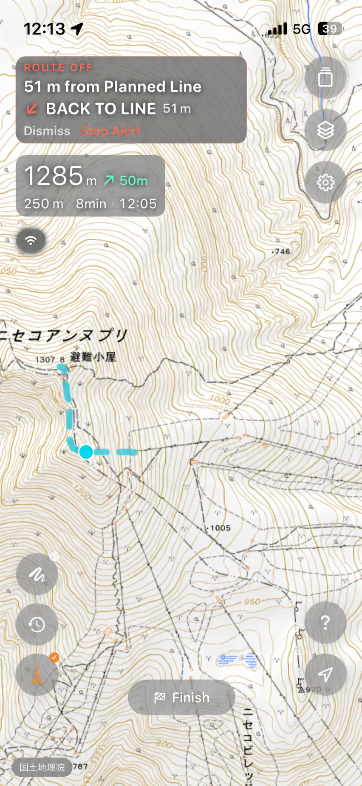
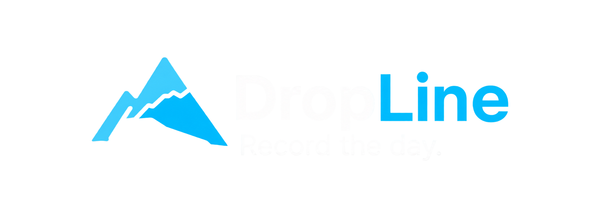
DropLine ProRecord the day.
ハイクアップの軌跡も、滑ったラインも
山で過ごした一日を、Lineとして残す
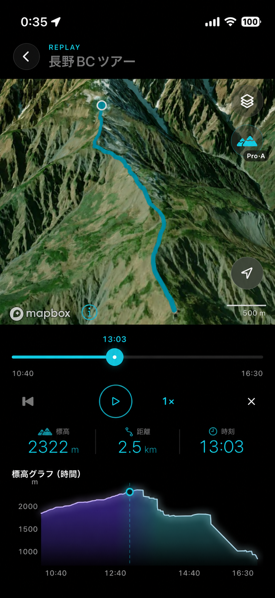
01 / Before the mountain
地図を眺めながら
どこを滑るか考える時間から始まる
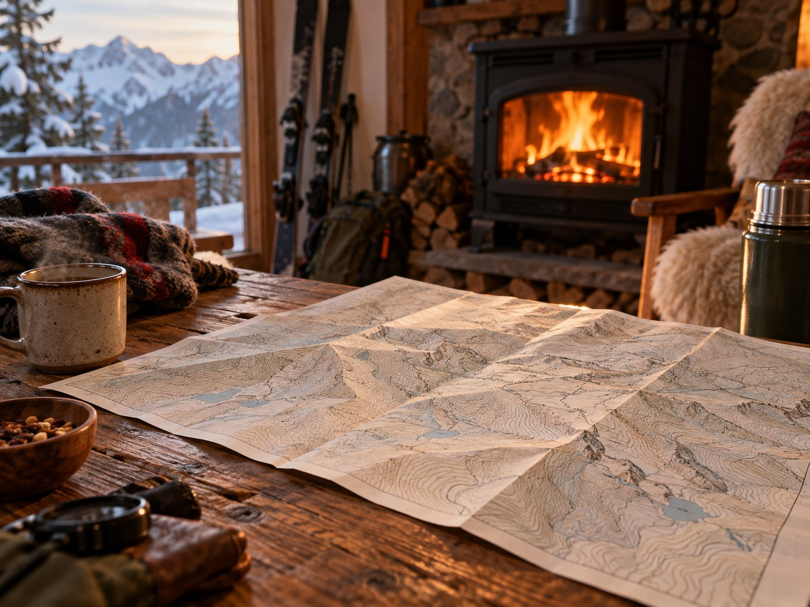
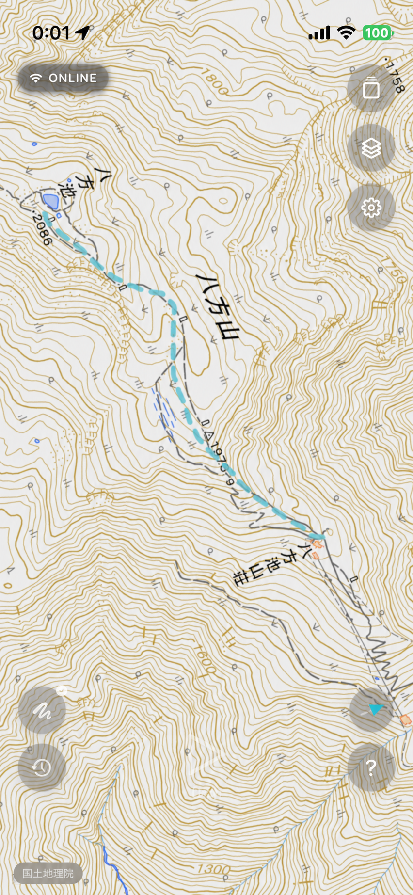
Planned Line 山の時間は、ここから
02 / In the mountain
山で過ごした時間が
一本のLineになっていく
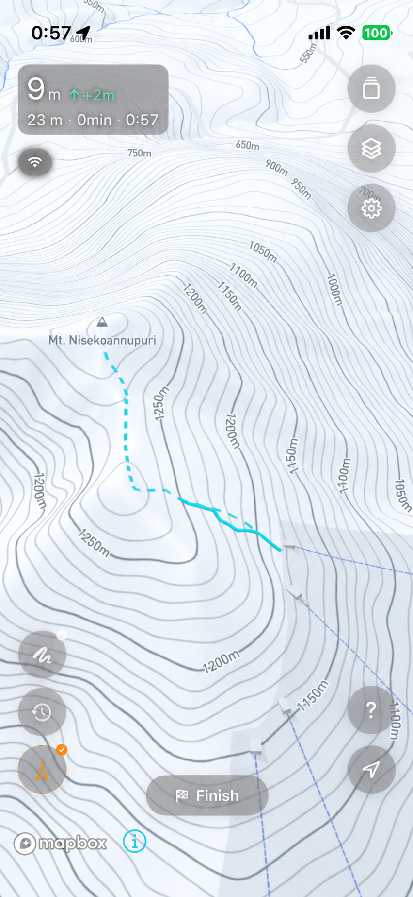
Recording 1日のすべてが今日のLineに
03 / Quiet support
現在地と予定ルートを常に確認してお知らせ

必要なエリアを事前にダウンロード
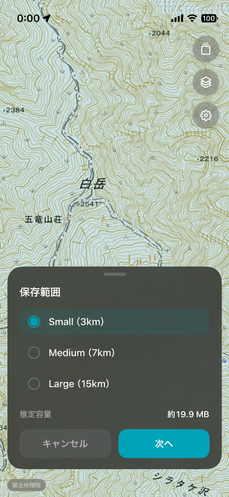
04 / Your lines
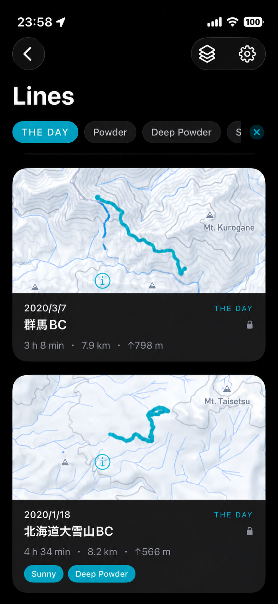
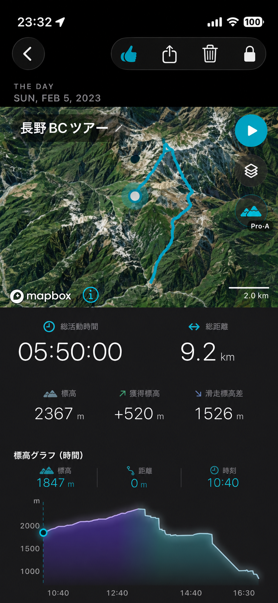
05 / Replay the day.
登った尾根も、滑った斜面も
もう一度、あの日の中へ
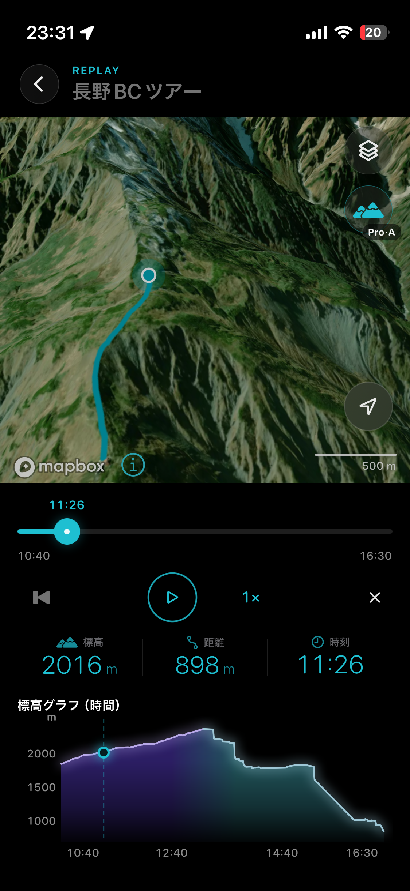
06 / Keep your line
約45秒ごとに自動保存
アプリ終了や電源OFF後も復帰
保存された記録から
大切な軌跡をできるだけ失わないために
07 / DropLine Pro
Replayをもっと深く
写真や動画をもっと残す
Mountain Lifeをもっと楽しむ
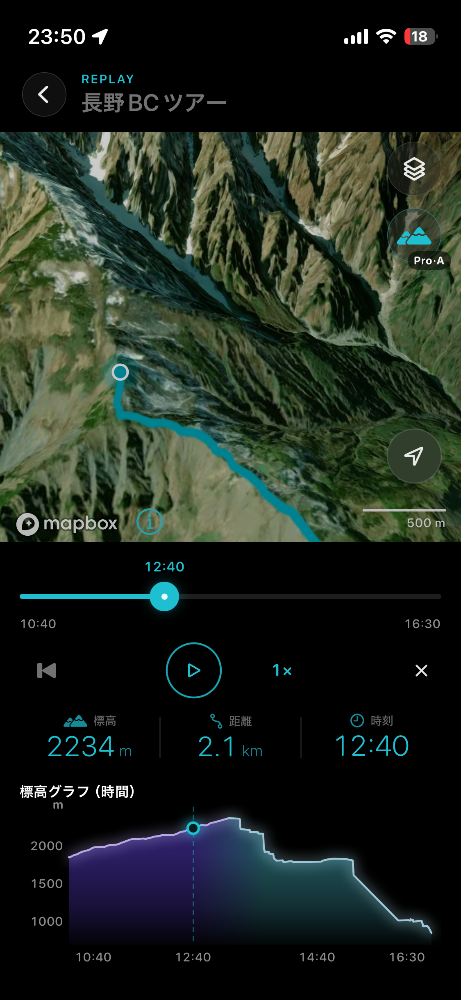
3D Replayを無制限に
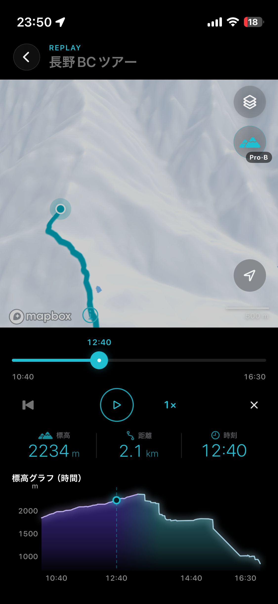
Proで広がるReplay体験
1つのLineにつき
写真50枚・動画10本まで保存できます
| 内容 | Free | Pro |
|---|---|---|
| Recording 予定ライン計画 オフライン地図DL 予定ライン逸脱通知 |
○ | ○ |
| 2D Replay （Apple Map / 国土地理院） |
○ | ○ |
| 3D Replay （Satellite / DropLine Style） |
5回 | 無制限 |
| 写真・動画 （1 Line毎）の保存数 |
5 | 50 / 10 |
DropLine Pro
¥1,500 / 年
年額・自動更新
月額プラン・無料トライアルなし
記録中のSatellite / DropLine Style地図もFreeで使えます